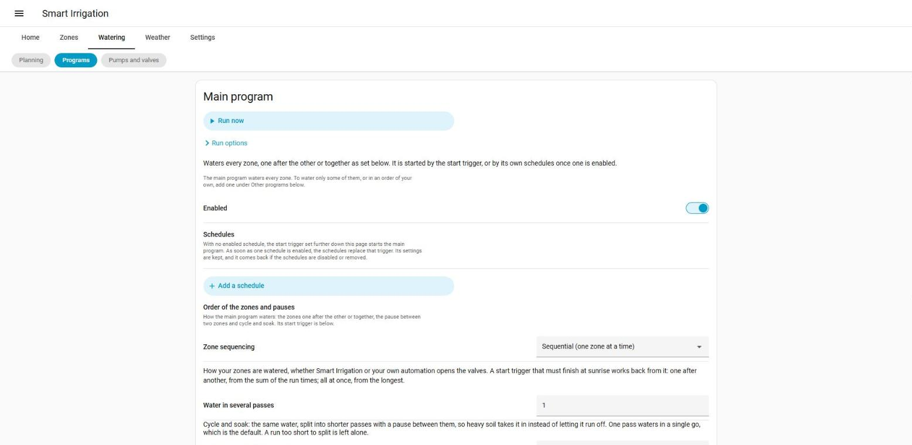
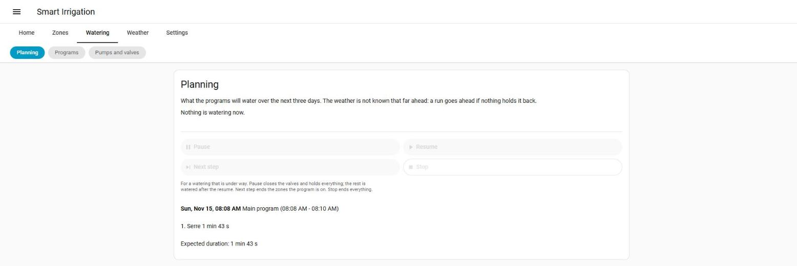

Full controller¶
By default Smart Irrigation decides how long each zone waters and leaves the running of the valves to you: an automation, a controller, Irrigation Unlimited. The full controller is an option for those who would rather have it do both. It runs the whole watering itself: when, in what order, with which pump, for how long, and what to do when you want it to stop.
It is off by default, and turning it on changes nothing until you add to it. Nothing on this page appears in the panel until it is on.

Turning it on¶
The full controller is what Calculate and water means: choose it in Settings, General, in the first card's list, What Smart Irrigation does. There is no other switch to turn on.
Choosing it:
- lets Smart Irrigation open and close the valves itself, and turns on observed watering, so a watering by hand counts too;
- waters with programs, each one the zones of its steps, started by its own schedules. When there is no program yet, it creates one with the zones that have a valve and a schedule that starts it as your start trigger did (done by sunrise by default), so nothing changes in when you water. A zone added later is watered once a program has it in a step: the setup assistant puts a new zone in one for you;
- adds a Watering tab to the panel, with three pages: Planning, Programs and Pumps. The cards below are in it.
Choosing Calculate only goes back to calculating for an automation of your own: Smart Irrigation fires its start event at the start trigger and opens no valve. Your programs and supplies stay stored for the day you choose Calculate and water again.
Up to 2026.11.0 this took two switches, Full controller and Let Smart Irrigation control the valve, and the main program of that time could also be started by the start trigger or switched off on its own. An installation is moved over once, keeping its watering as it was: direct valve control alone becomes Calculate and water, the active start trigger becomes a schedule of the program that was the main program, now an ordinary program called Watering (see below; the other triggers you had defined become schedules switched off, so none is lost: switch one on to use it), and if it was switched off its schedules stay switched off.
No main program any more (2026.11.1). Up to 2026.11.0 a special main program watered every zone with a valve, in the order of the general settings, and the other programs had steps. Now every program is the same kind. Your main program was turned once into an ordinary program, so it waters exactly as before: it keeps its id main (its sensor, its last runs and its notifications stay) and its schedules, and its name unless it was still the default Main program, which becomes Watering in the language of Home Assistant (a name you changed is kept); and gets explicit steps, the zones it watered in the same order. With one after the other, one step per zone, each followed by the pause between zones as its wait (none after the last); with all at once, one step with all the zones. Each step takes the calculated duration, in the passes the old setting asked for. A zone added afterwards is not watered until a program has it in a step. The Program on setting and its switch entity are gone too: a program starts on its own through the schedules that are on, so a program that was off had its schedules switched off. Run now always works. The set_program_enabled action is deprecated and will be removed in 2027.11: it still works, switching all of a program's schedules on or off, and raises a repair notice; use set_schedule_enabled instead.
One thing is different from the moment it is on: a valve found open at startup that no run of ours owns is closed. After a crash or a restart, a valve left open by a run nobody resumes would water until someone noticed. A reading that says nothing (unavailable, unknown) is never taken for an open valve. That startup alignment also closes a zone's extra valves, and it looks at the supplies: a pump or main valve that is on while nothing holds it is switched off, and one whose state cannot be read yet is looked at again 30 and 120 seconds later, since its entity often comes up after Home Assistant has started.
Pumps and main valves (supplies)¶
A supply is one or several entities, a pump or a main valve in front of the zone valves, that run while a zone they feed is being watered. Add them in the card Pumps and main valves, then pick one in each zone's settings.
Each supply has two delays, in seconds, and both are signed, from -3600 to +3600:
| Positive | Negative | |
|---|---|---|
| Delay before | The supply comes on that long before the zone valve opens. | The valve opens first, and the supply comes on that long after. |
| Delay after | The supply stays on that long after the zone valve closes. | The supply goes off that long before the valve closes, so a pump never pushes against a closed valve. |
Power cut before starting (kick_seconds, 0 to 60, 0 by default; advanced mode, and shown in every mode once it is not 0): for a pump whose pressure controller only starts again after its power has been cut, the supply is switched off that many seconds and then on, each time it is switched on. A supply already on for another zone is not cut again.
A supply is on while anything holds it, and goes off when the last hold is given back, after its delay. It is never switched off on a guess of when the cycle will end. Two zones in a row share one run of the pump, and with a delay after the pump stays on between them.
A supply that will not come on keeps the zone shut. Each switch call is tried twice, 3 seconds apart, and the entity must then read a state within 5 seconds. If the supply still has not come on, the zone's valve is not opened (no pump, no water), the run of that zone ends with a smart_irrigation_zone_problem of reason supply_did_not_turn_on, and smart_irrigation_supply_problem is fired too. A supply that will not go off never blocks anything: the off is tried again after 15, 45 and 120 seconds, smart_irrigation_supply_problem (reason supply_did_not_turn_off) is fired for the first failure (the retries are silent), and a supply still on after that stays recorded as on, so the next run or the next startup puts it off. The payload of supply_problem is supply_id, supply, entity_id and reason (supply_did_not_turn_on or supply_did_not_turn_off).
A zone can also have other valves that open and close with its own (a zone whose water comes through two valves), and light and cover entities are accepted as valves.
Programs¶
A program is an ordered list of steps. A step is one zone, or several zones watered at the same time. By default a step takes the duration Smart Irrigation calculated for each zone, which is what sets this apart from a timer.
For each step:
- Duration: calculated by Smart Irrigation (the default), calculated times a percentage (110 % in a heat wave, 50 % for a plant that needs less), or fixed (seconds of water). The lead time that fills the pipe is kept in every mode. A zone that needs no water gets none, unless the step is fixed.
- Only water when the deficit is at least (
min_deficit_mm, 0 to 100, 0 means none; YAML only, for instancemin_deficit_mm: 7on the step, see YAML-only options): a zone is only watered by the step when its water deficit (how far its water balance is below zero, in mm) is at least this. A zone under it sits the step out; this is only written in the log (reasonbelow_deficit), not exposed anywhere else. It applies to calculated and percent steps; a fixed step is always watered. Set, it replaces the zone's own irrigation threshold for this step: a zone whose threshold of 20 mm has not been reached yet, at a deficit of 15 mm, is still watered by a step asking for 7 mm, for the run its water balance implies. - Minimum water, Maximum water and Time added (+) or removed (-) (
min_seconds,max_seconds,adjust_seconds): the water of a step is raised to the minimum or capped at the maximum (0 means none, at most 86400 seconds each), and the time added or removed is a signed number of seconds (-6 h to +6 h). The time added or removed (adjust_seconds) is YAML only, for instanceadjust_seconds: -120on the step (see YAML-only options). A minimum never turns a zone that needs no water into watering: a calculated duration of zero stays zero. The lead time is added on top of these bounds. The order is below. - Fixed seconds (
seconds, for a fixed step): at most 86400. - Percentage (for a percent step): 0 to 1000.
- Water in several passes: the step's water is split into this many passes, 1 to 6, each zone soaking between two of them for the soak time, one setting for every program, shown next to the step's passes (cycle and soak).
- Wait after this step: seconds before the next step, from -3600 to +21600. Empty is no wait. A negative wait overlaps the steps: the next one starts that many seconds before this one ends, so the valves and the pump of both are open together for that time (up to an hour, and never longer than this step runs).
- Volume limit: a zone stops once its water meter has counted this many litres, at most 100000. The meter reports every so often, so it is not exact. A zone without a meter ignores it.
For the program:
- Rounds (
tours, YAML only, for instancetours: 2at the top of the program, see YAML-only options): the whole list is watered this many times (1 to 6), each round with its share of the water. Unlike passes, which repeat a step before going on, a round waters every step once and starts again, so each zone soaks while the others water and no soak time is needed.
Any program can be deleted, the one with the id main included, except the last one: the panel shows no Delete button then, and a save that would leave no program is refused. To stop it watering, switch its schedules off.
How the duration of a step is worked out, in this order: the step's percentage (percent steps), then the percentage of an adjust_program adjustment in force, then the step's time added or removed plus the seconds of that adjustment, then the minimum, then the maximum (so when the minimum is larger than the maximum, the maximum wins). Nothing under zero is watered. These bounds apply to the total water of the step, before it is split across the rounds; the lead time comes on top of each pass.
One queue per supply. Programs whose zones share a supply take turns: a different program asked for while one runs waits its turn, and a manual run asked for during a program is added behind it. Zones without a supply share one queue, the mains, so an installation without supplies runs one program at a time. A program on the well pump and one on the mains share nothing and water side by side. A program waits for every supply its steps name (all of its zones, not only those the plan will water), and the runs that asked first go first on every supply, so one that needs two supplies is not overtaken by runs that need one. A one-off run of every zone waits for everything else, and everything else waits for it. A zone watered by hand (water_zone) waits only for its own supply. Pause, resume and Stop act on every run; Next step moves every program on, or one with program_id. A program that is already running or waiting is not queued a second time: run_program on it is ignored (with a line in the log), and so is a schedule that comes due meanwhile. The plan is worked out when the turn comes, from the zones as they are then: a zone watered meanwhile is not watered again.
Seeing a program before it runs¶
An unfolded program shows what a run would do: one line per zone on a time axis, its passes as bars, the time its pipe fills in a lighter shade and the soak between two passes hatched. Two zones of one step run side by side, a negative wait shows the next step starting before the last one ends, and the total is at the end of the axis. The durations are the ones Smart Irrigation would water now; they follow the weather, so a run may differ when it starts. The Planning page draws each run it lists, on the clock.
A program in YAML¶
Edit in YAML shows the program as text, in place of the form, and back: a program written in YAML is an ordinary program once applied, and the form edits it as any other. To paste a program written elsewhere, add a New program and open it in YAML. Nothing is saved until Apply: as you type, the program is cleaned the way a save cleans it and drawn on the timeline, and a zone that does not exist, or one the run leaves out (no valve, or disabled), is named. Only a valid program can be applied.
The text is short on purpose, so it can be read, copied between installations or written by an assistant:
name: Evening
steps:
- zones: [Vegetable garden, Greenhouse] # watered together
mode: percent
percent: 80
passes: 2
- zones: [Hedges]
delay: -60 # the next step starts a minute early
schedules:
- time: "21:00"
weekdays: [0, 2, 4] # 0 is Monday
A step names its zones by name (case aside) or by number; a name two zones share is not guessed, use the number. What is left out takes its default, the same as the form: a calculated duration, one pass, no wait, a schedule that starts at its moment every day with the weather taken into account. The keys are the ones described above: for a step zones, mode (calculated, percent or fixed), percent, seconds, passes, delay, max_litres, min_seconds, max_seconds, adjust_seconds, min_deficit_mm and enabled; for the program name, tours, steps, schedules and notify (see below); for a schedule type (time, sun or after), time, event (sunrise, sunset or azimuth, with azimuth in degrees), after_program (with type: after: the program it starts after, by name or id; see Chaining programs), offset_minutes (0 or more with type: after), anchor (start or end), weekdays, every_n_days, every_offset, parity, days_of_month, months, from_date, until_date, weather, skip_conditions, hard_deadline and fallback_time. The id lines keep a program, a step or a schedule the same one across an edit (a schedule remembers its last run under its id): keep them when you edit, leave them out of a new program. An assistant can write and check a program for you: see Assistants (AI).
YAML-only options. As in Home Assistant's own visual editors, some options have no field in the form, even when they are set: they are written here, in YAML (or by the services or an assistant). Editing the program in the form keeps them as they are, and an unfolded program that uses one says so at its top, in a Set in YAML (not editable here) box listing them, with Edit in YAML at hand to change them. They are:
- for the program:
tours: 2, the rounds; - for a step:
adjust_seconds: -120, the time added or removed, andmin_deficit_mm: 7, only water when the deficit is at least; - for a schedule:
every_offset: 1, the shift of every N days,parity: even(orodd),days_of_month: [1, 15, last]andmonths: [5, 6, 7, 8, 9], the days;fallback_time: previous(or"06:00"), for polar day and night;skip_conditions: [rain_sensor, freeze], only some of the checks (the Take the weather into account switch itself stays in the form). - for a zone, in its own Edit in YAML:
safety_off_state_key: state_l1, the safety off state key, andopen_resends: 0, how often the open is sent again.
Being told when a program has watered¶
Each program has a Notifications section: tick whom to tell, and a summary is sent when the program has watered, one line per zone (minutes and, with a flow meter, litres) and one per problem (a valve that did not open, a run where no water flowed...). The targets are:
- Notification in Home Assistant: a persistent notification, replaced by the next run of the same program;
- the notify entities of Home Assistant;
- the notify actions that are not an entity, such as
notify.mobile_app_<phone>of the companion app. On a phone, a run that went wrong comes through with a high priority (Android) and as time-sensitive (iOS), and each program replaces its own previous notification.
When to tell: at the start and at the end of each watering (the start lists the zones about to be watered), only at the end, or only when something goes wrong. A valve that does not close and a pump or main valve that does not do what it is told are told at once, to the program under way, without waiting for the end of the run.
It is off until a target is ticked, and it changes nothing to a run. The events (smart_irrigation_program_finished, smart_irrigation_irrigation_finished...) are still fired, so an automation of your own keeps working beside it. In YAML:
notify:
targets: [notify.mobile_app_pixel, persistent_notification]
when: problems # or finish
start: false
Schedules¶
A program has any number of schedules, each a moment and the days it applies to.
- The moment is a time of day, sunrise, sunset, or the moment the sun reaches a bearing (azimuth, in degrees clockwise from north: 90 east, 180 south, 270 west, for a bed the shade of a wall leaves at that moment), with minutes before (-) or after (+). It is either when the program starts or when it must be done. With the second, the start is worked back from the length of what the program has to water (its steps, waits, passes and soaks). A start that has gone by while its moment is still ahead begins at once rather than losing the day, but only after a restart or a reload of Home Assistant, or when its timer was missed. Editing a program, or a calculation that makes the run longer, never starts a run on the spot: an edit at 05:50 of a "done by 06:00" schedule that now needs 20 minutes waits for tomorrow. The same goes for a schedule that starts at its moment: if Home Assistant was down then, the run is caught up after the restart when it is at most 2 hours late and has not run for that occurrence; later than that, it is passed over to the next occurrence.
- Cut the run at the end time (
hard_deadline, only for a schedule that must be done by its moment): by default that moment is a target, and a run that starts late, or has a longer plan than expected, or is paused, simply ends later. Turn it on and the moment is a limit: at that time the zones still open are closed the normal way (each is credited for the water it delivered), the steps not started are dropped, and theprogram_finishedevent carriescut: trueandreason: "deadline"(the log says so too). A run that gets its turn after the deadline has passed opens nothing. With a deadline, the zones of each step are also ordered driest first (lowest water balance, the largest water deficit); steps keep their order and the zones of a step still open together, so the ordering only decides which zone opens first. If the controller restarts mid-run, the deadline is kept with the run. - After a program (
type: after): the schedule has no moment of its own and starts its program once another one has finished. See Chaining programs. - Polar day and night: a sunrise or sunset schedule has no moment on a day when the sun does not rise or set, and that day is skipped. If there is no sunrise or sunset (
fallback_time) chooses what that day does: skip it (the default), use the time of the last sunrise or sunset seen (offset included, looking back at most 60 days;previous), or start at a fixed time (HH:MM). It is YAML only (or set by the services), for instancefallback_time: previousorfallback_time: "06:00"on the schedule (see YAML-only options). - Before or after the sun is limited to 12 hours either way (-720 to +720 minutes).
- The days are filters, and all of them have to hold: they apply to the day of the moment. A run that must be done by Monday 01:00 and takes two hours starts on Sunday at 23:00, and "Monday" is the day that counts. The weather, on the other hand, is judged when the run starts, so that run asks Sunday's conditions. The filters are: days of the week; every N days (N up to 60) with a shift from 0 to N - 1 (three programs with N = 3 and shifts 0, 1 and 2 take turns and never share a day); even or odd days of the month; named days of the month (
1, 15, last, where a month too short for a day skips it,31in April, andlastis every month's own last day); months; and a period of the year, a month and a day picked for each end, which may run over New Year (from November to March;MM-DDin the service,11-01to03-01). The panel's More options of a schedule has the days of the week, every N days and the period. The others are YAML only (or set by the services; see YAML-only options): the shift of every N days (every_offset: 1), even or odd days (parity: evenorparity: odd), the days of the month (days_of_month: [1, 15, last]) and the months (months: [5, 6, 7, 8, 9], January is 1). - Take the weather into account (
weather), a switch, on by default. On, the checks of Weather > Skip watering apply (rain, frost, wind, the days between irrigation, a wet soil, postponed days), with the same decision made once a day; on a day when rain is forecast, only the zones the rain cannot reach run. Off is for a greenhouse drip line that does not care (weather: false). In the drawing of a program, the Weather allows it? box gives the answer for its next run: Yes, or No with the check that holds it back (the rain forecast with its millimetres, the wind...). It is left out when no schedule of the program takes the weather into account. - Only some of the checks (
skip_conditions, YAML only, or set by an assistant, for instanceskip_conditions: [rain_sensor, freeze]on the schedule; see YAML-only options): a list choosing which of the skip conditions this schedule applies, amongpostponed,rain_sensor,freeze,wind,precipitation,days_betweenandsoil_moisture. Left out, all of them apply, as before. Your own postponement always applies when the weather is taken into account. The schedule judges its chosen conditions at the moment it starts, rather than using the day's shared decision; the holds that follow (days between per zone, a moist soil, rain since the calculation) are the same ones, except that a zone is only held by its days between when that condition is chosen, and by a moist soil only whensoil_moistureis chosen. Those holds change the zones' durations for the whole day, so they cannot be undone: if a schedule that applies the moist soil hold ran first, a later schedule of the same day that leftsoil_moistureout finds those zones already at zero. The other way round works: a schedule that left it out first does not stop a later one from applying it. Switching the schedule's weather off in the panel keeps the list but it no longer applies; switched on again, it applies again.
Good to know: the weather holds work on the zones' calculated durations, which all programs share. On a day a weather-aware start has held a zone back, a program that ignores the weather but waters that zone for its calculated duration finds nothing to water. For a zone that must be watered whatever the weather says, give its step a fixed duration.
A schedule that comes due while its program is already running or waiting starts nothing and counts no watering day; the days between irrigations are only reset for the zones that really start. A program deleted or suspended while it runs stops before its next step. Deleting a program or a schedule also clears what was remembered of its last run, so a new schedule never inherits it.
An occurrence counts as fired as soon as it comes due, whatever happens next: a schedule that is suspended, whose program is already running, or that the weather holds back is not tried again for that occurrence. A scheduled run that is waiting for its turn when Home Assistant restarts is not kept (only a queued manual run is, see below): it is lost until the schedule's next occurrence.
The Smart Irrigation schedules are armed when a setting changes, after a calculation and at a new day, like the start trigger.
The length a "must be done" schedule works back from is the one the Planning chart and the program sensors show, with the adjust_program adjustment in force included. Setting or clearing an adjustment arms the schedules again at once, so the start moves with it.
Chaining programs¶
A schedule can start its program after another program, the way backup jobs are chained: "water the beds 10 minutes after the lawn is done". The second program follows the first whatever its length, which changes every day with the weather, so there is no start time to guess and no gap or overlap to fix by hand.
What it is for:
- One after the other on the same water: the beds after the lawn on the same well, pump or tank, with a pause in between so the well or the tank fills up again (
offset_minutes: 30). - Something that only makes sense after a watering: a fertiliser program, a line flush, the pots on the terrace on Saturdays only.
- Programs with their own rules in one sequence: each one keeps its own steps, days and weather, and a third program can follow the second.
In the schedule, set When to After a program, pick the program in Program, and in Minutes after it ends how long to wait once it has finished (0, right away, up to 720; never before). That moment is when the program stays on starts: the end of a run still to come cannot be aimed at, so hard_deadline does not apply either. In YAML:
name: Beds
steps:
- zones: [Beds, Hedge]
schedules:
- type: after
after_program: Lawn
offset_minutes: 30
weekdays: [5] # Saturdays only (0 is Monday)
The rules:
- It starts only when the other program really watered: it went to its end, or was cut by its deadline, and at least one zone got water, whether it was started by its own schedule or with Run now. Not when that one was held back by the weather, suspended, already running, had nothing to water, opened nothing because its deadline had passed, or was stopped (Stop,
stop_watering,stop_program, a run that replaced it, or the program deleted, suspended or Smart Irrigation switched off while it ran): whoever stopped the watering did not want the next program either. - Then it is a start like any other: its own days are judged on the day it would start (a run that ends at 23:50 with a 20 minute offset is judged on the next day), its own weather is judged when it starts, it takes its turn on its supplies, and it starts nothing when its program is suspended or already running. Its own finish can start a third program in turn.
- Programs cannot start after each other in a loop (A after B after A, or A after itself): the save is refused, and the program list does not offer the program that would close it. A program another one starts after cannot be deleted (the schedule waits for it, switched on or not): Delete the program is greyed out with the reason, until that schedule is changed. A schedule that still waits for a program that is gone (an old backup) says so and never starts.
- A start waiting for its offset is recorded and survives a restart: one that came due while Home Assistant was down starts late when it is at most 2 hours late, and is given up beyond. A newer finish of the same program (run again by hand during the wait) replaces it.
- The planning, the week view and the flow place it right after the planned end of the other program, plus the offset, on the days its filters allow, and only after a run of that program that is expected to water: one the forecast holds back, suspended or with nothing to water starts nothing after it, and nothing is planned when that program is not planned in the window.
Irrigate all zones now¶
The Irrigate all zones button of the hub device runs every zone that has a valve once, as a one-off: it is not a program and has no schedule. Its order (one after the other or all at once), its passes and its pause between zones are in Watering > Programs, folded at the bottom of the card under Settings of the Irrigate all zones button, in the advanced mode (the block shows in every mode once one of them is changed: all at once, more than one pass or a pause). They change nothing to the programs, which water their own steps. The run takes its turn on every supply, fires smart_irrigation_irrigation_started and smart_irrigation_irrigation_finished, and credits each zone for what it delivered.
Driving the watering¶
The Programs card: each program's header row has its actions as icons, beside its name and its state (running, paused or waiting for its turn, with the step and the time left): Run now, Stop this program while it is under way, Edit in YAML, and the Options for this run (a total duration, and whether to replace what is running) for the next press of Run now. Pause, Next step and Stop for everything that is watering are on the Home page, while something waters. And these services:
| Service | What it does |
|---|---|
smart_irrigation.run_program |
Runs a program now, or when it is its turn. Optional seconds (1 to 86400) is a total for the whole program, shared between its steps in proportion to their planned durations; left out, the planned durations. A program that is already running or waiting, or suspended, is not run, with a line in the log. A program whose schedules are all off runs all the same: they only decide when it starts on its own. Optional mode: queue (default) takes the turn behind what is running, replace first stops what runs and waits, cleanly (valves closed, delivered water credited), then runs the program. |
smart_irrigation.water_zone |
Waters a zone for a number of seconds of water, or for its calculated duration. With mode: queue (default) it takes its turn like everything else; with mode: replace it first stops what is running and waiting. With several zones, only the first replaces, the others follow it. A zone you suspended is watered anyway: asking for it by hand overrides the suspension. |
smart_irrigation.stop_program |
Stops one program: if it runs, its open zones close the normal way and are credited for what they delivered, and no further step starts; if it waits for its turn, it is taken out of the queue. An unknown id does nothing. |
smart_irrigation.set_step_enabled, set_schedule_enabled |
Switch one of a program's steps (step_id) or one of its schedules (schedule_id) on or off (enabled), as the panel does (set_program_enabled is deprecated): the schedules are armed again and the panel refreshes. With the full controller off nothing changes; an unknown program, step or schedule id is refused with an error. |
smart_irrigation.pause_watering |
Closes the open valves and holds everything, the zones waiting included. The clock stops: what was delivered is credited and, after the resume, the part of the pass still owed is watered. A pause that is not lifted ends by itself after an hour (or the minutes given). |
smart_irrigation.resume_watering |
Goes on from where the pause stopped. |
smart_irrigation.next_step |
Ends the zones of the step a program is on, and lets it go on. With overlapping steps, it ends every step that is open. Programs on supplies of their own water side by side: program_id moves only that one on, and without it every program that is running moves on. |
smart_irrigation.stop_watering |
Stops now: every valve is closed, each zone is credited for the water it delivered, programs and waiting zones end. With zones chosen, only those, and the programs under way or waiting do not water those zones in their later steps either. Without zones it also ends a pause. |
smart_irrigation.suspend |
Keeps a zone or a program from watering for some hours or until a date. Zero hours lifts it. Hours are limited to 8760, a date that cannot be read is refused (it never lifts a suspension), and an unknown program id is ignored. |
smart_irrigation.adjust_program |
Makes a program water longer or shorter for a while (Irrigation Unlimited's adjust_time): a percent (0 to 1000) of every step's water, and/or seconds added to it, for hours (1 to 8760) or until reset. It replaces the previous adjustment instead of adding to it, applies to the runs that start after it is set (not to the one under way), survives a restart, and reset: true clears it. Refused when the full controller is off, and for an unknown program id. The program's sensor shows it in the adjustment attribute. |
smart_irrigation.use_measured_throughput |
Takes the flow a zone's meter measured as its throughput. The measurement is advice and is never applied on its own. |
Seeing what is going on¶

- The Planning page draws what the programs will water over the next days (3, 7 or 14) as a chart: hover a run for its zones and minutes, why the weather may hold it back, and what it waits for or starts after; a click opens its program. Under it, the Watering now card shows what is watering now: the step, the round, how far along, the valves that are open and for how much longer. Each planned run carries its expected seconds. For a run in the next 48 hours (as far as the rain forecast reaches) it also says when the forecast would hold it back:
skipped_reasonisprecipitation, with the forecast and threshold behind it. A run that ignores the weather, or one further away, gets no reason: the weather is not known days ahead, and a planned run goes ahead if nothing holds it back. Only forecast conditions are predicted, not what the sensors read now. The planning lists the schedules that are on, and ignores suspensions and postponements: a suspended program still appears. For each run,stepslists the zones of the first round only, whileexpected_secondscovers all the rounds. The data also carriesforecast_known(whether a forecast could be read) andsheltered_zone_ids(the zones that still run on a day the rain holds back), but the panel shows only the forecast rain (forecast_mm). - A dry zone nothing will water. Once a day, an automatic zone whose water balance has been dry for more than 3 days while no program covers it raises a repair notice (one per zone) and fires
smart_irrigation_zone_unwatered. Dry means a deficit of at least half the zone's maximum water balance, or its irrigation threshold when that is larger (never under 1 mm). Covered means a program that is not suspended has an enabled schedule and an enabled step with the zone. A zone you suspended yourself is left alone. The notice clears when the zone is watered or a program covers it again. The count of dry days starts again after a restart or after any reload of the integration. The check also runs at once whenever the programs are changed, so a zone that a new program covers stops being a candidate straight away. - One sensor per program (
sensor.smart_irrigation_program_<id>):idle,waiting,running,pausedorsuspended, with the next start, the last run, the suspension and, while it runs, the step and how far along. See entities for the attributes. - A check while a valve is open. Every 60 seconds, the zone's linked valve is read. If it reads
off,closedorclosing, it shut by itself (a water-shortage auto-close, a timed-off that ran out, somebody closing it at the device):smart_irrigation_valve_out_of_syncis fired, with asmart_irrigation_zone_problemof reasonvalve_closed_early, and the zone's run ends. The valve is not opened again, so a device that closed for lack of water stays shut. The zone is credited for the time the valve was open, taken from the moment its state changed (or, failing that, the moment the check noticed it, so the credit is then exact to about a minute). A valve that readsunknownorunavailableis never taken for a closed one. Only the linked valve is checked, not the extra ones. - Events. The other events keep firing too.
smart_irrigation_program_started:program_id,program(the name),manual,tours(the rounds),zones(the first round only, each{zone_id, zone, seconds}) andresumed: truewhen the run goes on after a restart.smart_irrigation_program_finished:program_id,program,manual,zones(what was watered, withseconds,volume_land the new water balance),problems({zone_id, zone, reason}) andstopped. A program that starts after this one starts whenzonesis not empty andstoppedis false, orcutis true. A run cut at its deadline addscut: trueandreason: "deadline". It is not fired for a plan with nothing to water, nor for a run taken out of the queue before its turn. A run whose deadline has already passed when its turn comes firesprogram_finished(cut) and noprogram_started.smart_irrigation_valve_onandsmart_irrigation_valve_off, at every switch of a valve or a supply:entity_id,kind(zoneorsupply) and, for a zone,zone_idandzone, for a supplysupply_idandsupply. The off of a zone valve addsclosed(whether it really closed).smart_irrigation_valve_out_of_sync:zone_id,zone,entity_id,expected(open),actualandreason(closed_early).smart_irrigation_supply_problem:supply_id,supply,entity_idandreason, as above.
When Home Assistant restarts¶
A program run and a cycle that is under way are recorded as they go. After a restart the run that was open is finished from its own record first, then the steps still to do follow, one at a time. Programs that were watering side by side each have their own record and each go on with their own steps. A run more than six hours old is not resumed: it belongs to another day. With overlapping steps, the record is that of the later step: the earlier one that was still open is finished from its own record, and the later one restarts with the zones it had not started. What is not resumed: the remaining passes of the zone that was open (only the pass in progress is).
A pause survives a restart while its end is still ahead: the watering is held again until then (or until you resume), and the valves that were open are not reopened by the pause itself; the program goes on from the resume as it does after any pause. A valve run interrupted by the restart is held the same way: nothing is opened (the pump included) while the pause lasts, and the rest of its pass is watered after the resume, with the water delivered before the restart credited once. A manual run you stopped while it waited is also removed from the stored queue at once, and queued runs wait for every run resumed after the restart (a valve run or a cycle, not only a program) before they start. The water a pause owes is kept too: when a pause closes the valves of a step, what each zone still owes (and the passes after it) is recorded, so a reload (an options save) or a restart during the pause does not lose it. After it, and once the pause is over, those zones water what they owed first (credited once, the part delivered before the pause having been credited already), then the program goes on with the next steps. A pause that ended while Home Assistant was down is not held again, and the owed water is watered at once; owed water more than 30 hours old is dropped. Manual runs waiting for their turn (a run_program asked for during another program) are kept too: after a restart they are put back in line, behind a program that is being resumed, unless they are more than six hours old or their program is gone, disabled or suspended.
A valve that is slow to say it is open, a battery valve on Zigbee for instance, is given 30 seconds instead of 8 and is asked to open again at 10 and 20 seconds. Only one that stays closed after that is a failure, reported as valve_did_not_open. A zone can set its own wait (advanced mode) and number of resends (open_resends, YAML only), for a cloud valve that confirms slowly or should not be asked twice: see the confirmation per zone.
A Sonoff SWV on ZHA is opened with one command, ZHA's on with timed off, which opens the valve and bounds it at the same time: the time is the pass length plus a 30-second margin, so the valve closes itself even if Home Assistant dies right after opening. Smart Irrigation still closes it at the normal time, and a repeated open (above) sends the same command. This happens only when the zone's safety off mode is auto (the default), the zone has no MQTT topic and the valve is a known SWV; in zha or off mode the normal open is used. The command is tried once, for 6 seconds. If it fails, a warning is logged once for the zone and the valve is opened the normal way. See closed-loop control for the details and the other valves.
Limitations¶
- A flow meter shared by zones that water at the same time cannot tell their water apart. While they overlap, their volume limit counts the meter's litres divided equally by the number of zones on it (an approximation), and their litres are not credited from the meter nor used to calibrate the measured flow: they are credited by time, and a line in the log says so once. Give each zone its own meter for exact limits and calibration.
What it is not¶
It is not a pressure controller, a master-valve scheduler for a whole farm, or a replacement for a controller that already does its job. If a Rain Bird, Hydrawise, Rachio, OpenSprinkler or B-hyve runs your valves, its blueprint is the right way and the full controller has nothing to add to it.